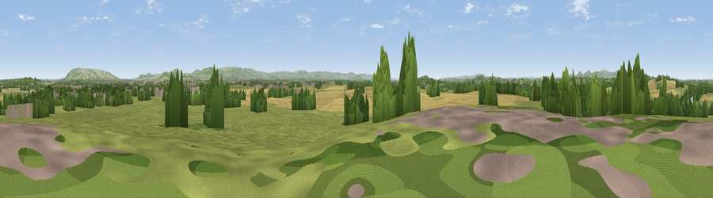

Viewpoint near Deerhurst
#16537 in England · top 42% of its area beats it · near DeerhurstThe view, rendered

A 360° render of this exact spot computed from the terrain model, tree cover and land cover — summer colours, afternoon light, calibrated against photographs of famous viewpoints. Real trees, hedges and buildings will differ in detail.
The panorama
Grey silhouette: terrain skyline in each direction (720 bearings, Earth curvature and refraction included). Dashed green: skyline with trees (+15 m) and buildings (+8 m) as obstacles. Blue strip: how far the ground is visible on each bearing.
Where the view opens
Wedge length = distance to the farthest visible ground on that bearing (vegetation-aware). Rings at 10, 25 and 50 km.
What fills the view
54% grassland · 27% cropland · 15% woodland · 4% built-up · 1% water
Angular shares of the visible panorama (visual magnitude), not map area. Landscape diversity 0.50 (0–1 Shannon).
Key numbers
More beautiful places nearby
The staircase of upgrades: each row has a higher view potential than everything closer. Driving times are estimates from straight-line distance, calibrated against real road routing — check an actual route before setting out.
| Place | Direction | Drive | Score |
|---|---|---|---|
| Viewpoint near Forthampton | NW · 4 km | ~9 min | 63.2 |
| Corse Grove Hill | WSW · 6 km | ~13 min | 67.6 |
| Viewpoint near Teddington | E · 8 km | ~17 min | 70.6 |
| Viewpoint near Alstone | E · 9 km | ~18 min | 79.8 |
| Nottingham Hill | ESE · 10 km | ~20 min | 80.9 |
| Viewpoint near Bredon's Norton | NE · 11 km | ~20 min | 81.3 |
| Bredon Hill | NE · 12 km | ~22 min | 83.0 |
| Millennium Hill | NW · 15 km | ~27 min | 86.9 |
51.97936, -2.17212 · source: screening · position refined by local search. Computed location — check access rights before visiting.